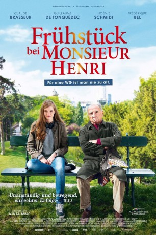

#4954 Frühstück bei Monsieur Henri
 
 IMDB-Wertung: 6.7 / 10
IMDB-Wertung: 6.7 / 10  Metascore: 0
Metascore: 0 
Die Gesundheit des in die Jahre gekommenen Henri Voizot (Claude Brasseur) ist nicht mehr die beste. Also lässt sich der grummelige Mann darauf ein, seine Wohnung mit der jungen Studentin Constance (Noémie Schmidt) zu teilen, gibt aber strenge Regeln vor. Allein die Zusammenfassung der Hausordnung, an die sich Constance fortan halten muss, hat 20 Seiten – fortan muss die junge Frau kalt duschen („dauert nicht so lange“) und darf keine Männer empfangen („man braucht Regeln, wenn man in einer Gemeinschaft wohnt“). Bald hat Henri eine weitere Forderung an seine neue Mitbewohnerin: Sie soll dafür sorgen, dass sich sein Sohn Paul (Guillaume de Tonquedec) von Freundin Valérie (Frédérique Bel) trennt, die der Papa für eine Idiotin hält. Falls Constance Paul und Valérie auseinanderbringt, braucht sie sechs Monate keine Miete zu zahlen...
Jahr: 2015
Dauer: 99 Minuten
FSK:
Land: Frankreich Studio: Neue Visionen FilmverleihTonspuren:
Untertitel: Deutsch,
Auflösung: 1080p (1920x800) Größe: 3266 MB
Genre: Komödie
Regisseur: Ivan Calbérac
Drehbuch: Frances Mayes
Soundtrack:
Darsteller:
 Claude Brasseur als Henri Voizot
Claude Brasseur als Henri Voizot- Guillaume de Tonquédec als Paul Voizot
 Frédérique Bel als Valérie
Frédérique Bel als Valérie- Candice Ford als
- Marion Sedlak als
 Jonathan Louis als Un homme en soirée , uncredited
Jonathan Louis als Un homme en soirée , uncredited- Noémie Schmidt als Constance Piponnier
- Thomas Solivéres als Mathieu
- Valérie Kéruzoré als La mère de Constance
- Stéphan Wojtowicz als Le père de Constance
- Antoine Glemain als Le frère de Constance
- Grégori Baquet als Arthur
 Anne Loiret als L'examinatrice auto-école
Anne Loiret als L'examinatrice auto-école- Nicolas Guillot als Le DJ
- Paula Brunet-Sancho als L'assistante de Paul
- Agnès Pichois als La cliente au marché
- Céline Esperin als L'hôtesse boîte de nuit
- Guillaume Watrinet als L'agent immobilier
- Pierre Cassignard als Jérôme
- Oudesh Rughooputh als Le Cuisinier , uncredited
Datei: X:\2015(A-F)\Frühstück bei Monsieur Henri (2015, FSK, 1920x800).mkv seit 05.12.2016
Festplatte: HD 2015(A-Z)
 Es gibt insgesamt 143 Filme in der Gruppe '2015(A-F)'
Es gibt insgesamt 143 Filme in der Gruppe '2015(A-F)'